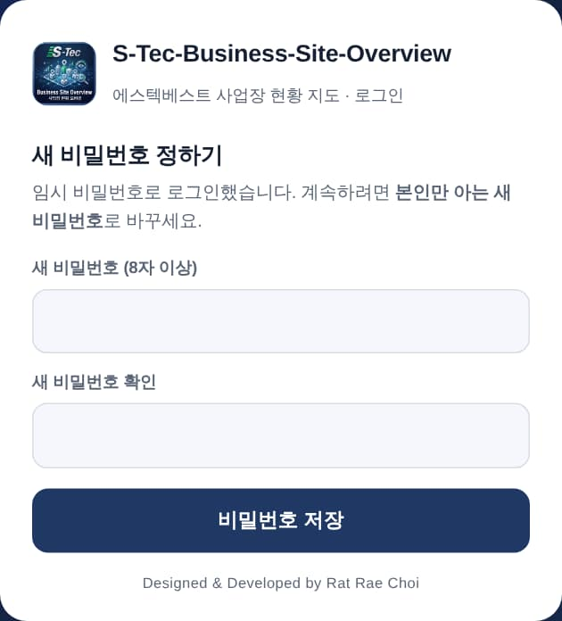
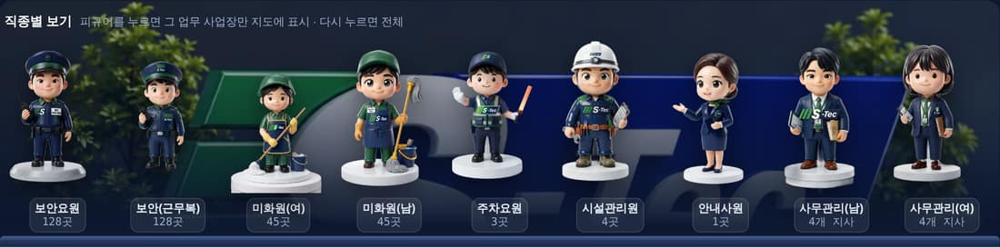
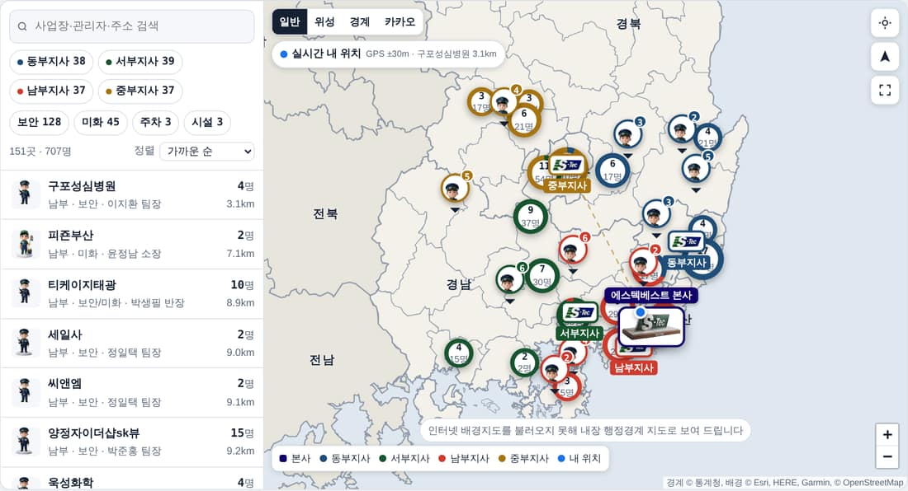
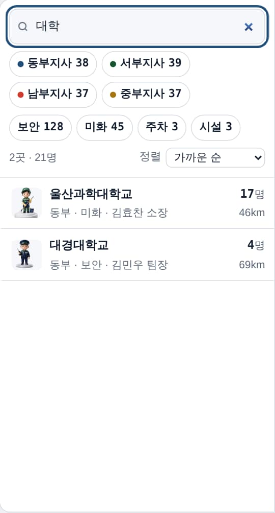
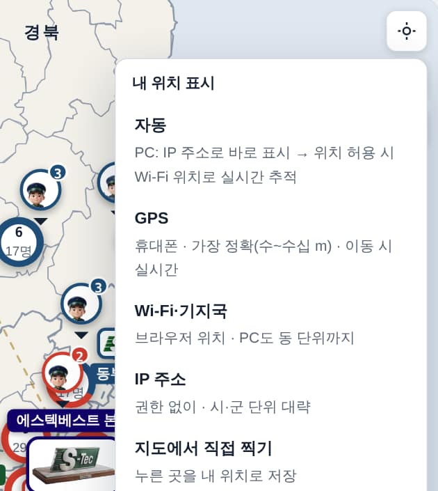
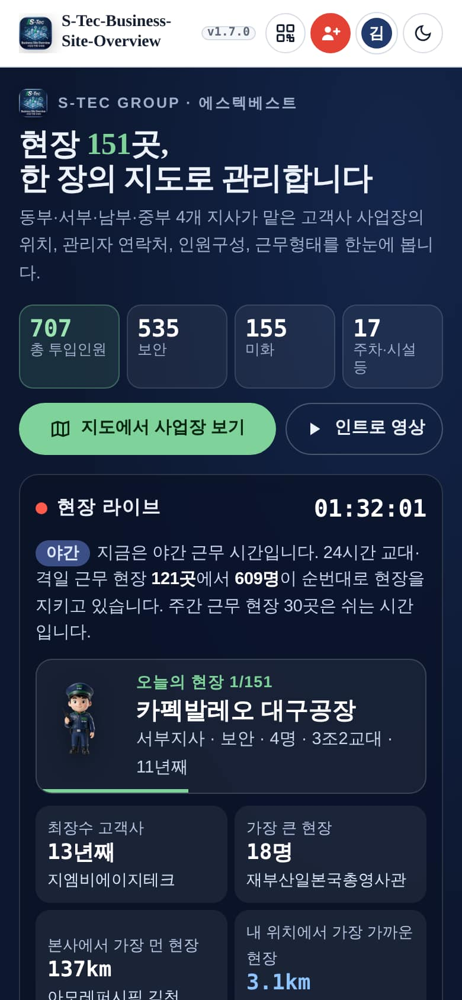
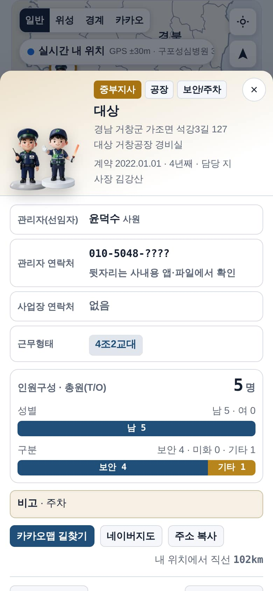
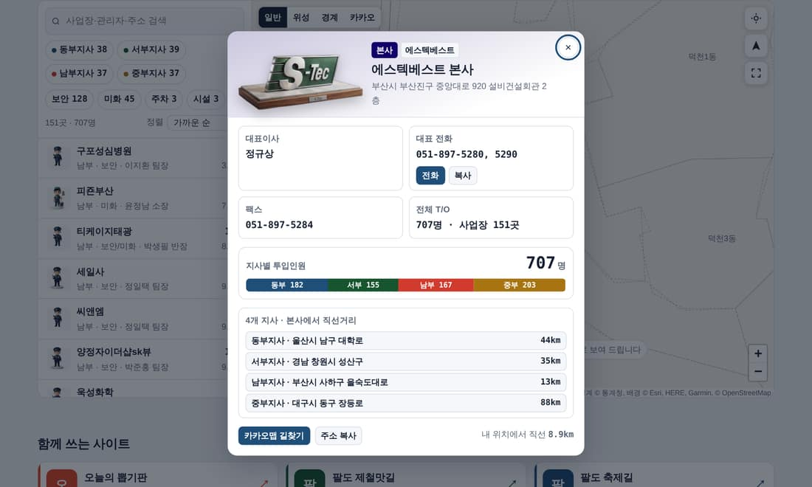
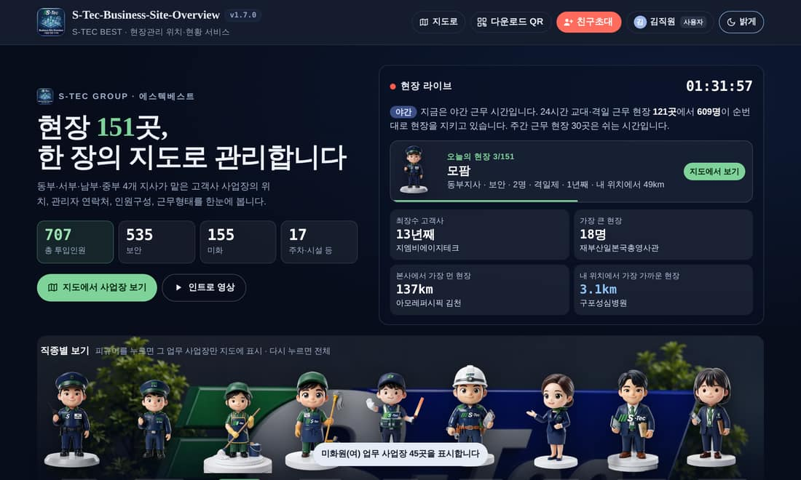
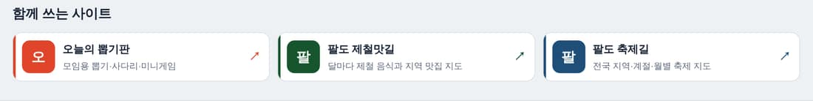

S-Tec-Business-Site-Overview 사용 매뉴얼
에스텍베스트 사업장 현황 지도 | v1.7.0 | 일반 직원용 · 처음 쓰는 분도 따라 할 수 있게
이 프로그램으로 할 수 있는 일 에스텍베스트 본사와 동부·서부·남부·중부 4개 지사가 맡은 고객사 사업장 151곳을 지도 한 장에서 봅니다. 사업장마다 위치, 관리자(선임자)와 연락처, 인원구성, 근무형태를 확인하고, 바로 전화하거나 카카오맵 길찾기로 찾아갑니다. 휴대폰은 GPS로 내 위치를 실시간 표시해 가까운 현장부터 보여 줍니다. |
장 | 내용 |
|---|---|
1부 · 시작하기 | 여는 방법(PC·안드로이드·아이폰), 로그인·가입 신청·비밀번호 |
2부 · 메인 화면 | 상단 버튼, 현장 라이브, 직종별 보기, 지사별 현황 |
3부 · 사업장 지도 | 검색·필터·정렬, 지도 종류, 내 위치·따라가기 |
4부 · 사업장 정보 창 | 관리자·연락처·인원구성·근무형태, 전화·길찾기 |
5부 · 그 밖의 기능 | 다운로드 QR·친구초대, 테마, 내 계정, 함께 쓰는 사이트 |
6부 · 자주 묻는 질문 | 막혔을 때 이렇게 하세요 |
1부. 시작하기
여는 방법 — 셋 중 편한 것 하나
기기 | 여는 법 |
|---|---|
PC (인터넷 창) | 주소창에 https://sadness500-boop.github.io/S-Tec-Business-Site-Overview/ 입력 → 열리면 Ctrl + D 로 즐겨찾기 |
안드로이드 휴대폰 | 제작자가 보내 준 앱 파일(S-Tec-Business-Site-Overview_v1.7.0.apk)을 눌러 설치 → 홈 화면 아이콘으로 실행 |
아이폰 | 사파리로 위 주소를 열고 → 아래쪽 공유 버튼 → 홈 화면에 추가 → 홈 화면 아이콘으로 실행 |
안드로이드 앱 설치 (처음 한 번)
- 카톡 등으로 받은 apk 파일을 누릅니다.
- "출처를 알 수 없는 앱" 안내가 나오면 설정 → 이 출처 허용을 켜고 뒤로 돌아와 설치를 누릅니다.
- Play 프로텍트 경고가 나오면 무시하고 설치(또는 세부정보 → 설치)를 누릅니다.
- 처음 열 때 위치 권한을 물으면 앱 사용 중에만 허용을 누릅니다. 그래야 내 위치가 지도에 나옵니다.
- 새 버전을 받으면 지우지 말고 그대로 덮어 설치합니다.
로그인
제작자가 로그인 기능을 켜 두면, 프로그램을 열 때 로그인 화면이 먼저 나옵니다.


그림 1. 로그인 · 가입 신청
- 처음이면 처음이세요? 가입 신청 → 이름·소속·연락처·이메일·비밀번호(8자 이상)를 쓰고 가입 신청.
- 승인 대기 중 화면이 나오면 제작자(또는 관리자)에게 승인을 부탁합니다. 승인되면 다시 확인을 누릅니다.
- 다음부터는 아이디(이메일)·비밀번호로 로그인합니다. 이 기기 이름에는 "회사 PC", "내 휴대폰"처럼 적어 주세요(접속기록에 나옴).
- 같은 아이디로 PC·휴대폰·태블릿 어디서든 로그인할 수 있습니다.

그림 2. 승인 대기 중 · 임시 비밀번호로 로그인했을 때
비밀번호를 잊었을 때
- 로그인 화면 비밀번호를 잊었어요 → 가입한 이메일로 재설정 메일 받기 → 메일의 링크를 누르면 새 비밀번호 화면이 열립니다.
- 메일이 안 오면 제작자에게 임시 비밀번호를 요청하세요. 임시 비밀번호로 로그인하면 새 비밀번호를 정하는 화면이 나옵니다.
이런 화면이 나오면
화면 | 뜻 · 할 일 |
|---|---|
⏳ 승인 대기 중 | 아직 승인 전. 제작자에게 승인 요청 → 다시 확인 |
📅 사용기한 만료 | 정해진 사용기간이 끝남. 제작자에게 연장 요청 |
⛔ 사용이 중지된 계정 | 접속이 막힘. 제작자에게 문의 |
📵 이 기기는 사용 제한 | 이 기기만 막힘(예: 분실 신고). 다른 기기를 쓰거나 제작자에게 문의 |
🛠️ 프로그램 점검 중 | 자료 정리 등으로 잠시 잠금. 잠시 후 다시 확인 |
📶 인터넷 연결 필요 | 로그인 확인에 인터넷 필요. 마지막 확인 후 24시간까지는 인터넷 없이도 열림 |
2부. 메인 화면 둘러보기
그림 3. 메인 화면 (PC)
상단 버튼
버튼 | 하는 일 |
|---|---|
v1.7.0 | 지금 쓰는 프로그램 버전 |
🗺 지도로 | 아래 사업장 지도로 바로 이동 (PC) |
다운로드 QR | 사이트 주소 QR — 휴대폰으로 찍어 북마크·홈 화면에 추가 |
친구초대 | 동료에게 사이트 주소 보내기(주소 복사 · 카톡·문자 공유) |
내 이름 (●) | 내 계정 — 정보 수정, 비밀번호 변경, 지금 동기화, 로그아웃 |
어둡게 / 밝게 | 화면 테마 바꾸기 (밤에는 어둡게가 편함) |
현장 라이브
그림 4. 현장 라이브
- 지금이 주간인지 야간인지, 지금 근무 중인 현장 수와 인원을 알려 줍니다.
- 오늘의 현장이 6초마다 바뀌며(마우스를 올리면 멈춤) 사업장을 하나씩 소개합니다. 지도에서 보기를 누르면 그 사업장으로 이동합니다.
- 최장수 고객사, 가장 큰 현장, 본사에서 가장 먼 현장, 내 위치에서 가장 가까운 현장을 보여 줍니다.
직종별 보기 (3D 피규어)

그림 5. 직종별 보기 — 피규어를 누르면 그 업무 사업장만 지도에 표시
보안요원·미화원·주차요원·시설관리원·안내사원·사무관리 피규어를 누르면 그 업무가 있는 사업장만 지도와 목록에 남습니다. 같은 피규어를 한 번 더 누르면 다시 전체가 보입니다.
지사별 현황

그림 6. 지사별 현황 카드
본사와 4개 지사의 사업장 수·투입인원·여성 인원·업무 구성을 보여 줍니다. 지사 카드를 누르면 그 지사 사업장만 지도에 남고 그 지역으로 이동합니다. 휴대폰에서는 카드를 옆으로 밀어 봅니다.
3부. 사업장 지도

그림 7. 사업장 지도 (PC) — 왼쪽 목록, 오른쪽 지도
지도 보는 법
- 동그란 핀 하나가 사업장 하나입니다. 핀 안 그림은 주된 업무(보안·미화 등), 테두리 색은 지사(범례 참고), 작은 숫자는 인원입니다.
- 멀리서 보면 가까운 사업장끼리 숫자 묶음(예: 6 / 21명 = 사업장 6곳 · 21명)으로 합쳐집니다. 누르거나 확대하면 풀립니다.
- S-Tec 명판이 본사, 지사 이름표가 4개 지사 사무실입니다. 점선은 본사와 지사를 잇는 선입니다.
검색 · 필터 · 정렬

그림 8. "대학"으로 검색한 결과
- 왼쪽 위 검색칸에 사업장 이름·관리자 이름·주소 일부를 씁니다. (예: 대학, 온산, 김○○)
- 아래 지사 단추(동부·서부·남부·중부)와 업무 단추(보안·미화·주차·시설)를 눌러 골라 볼 수 있습니다. 다시 누르면 풀립니다.
- 정렬: 가까운 순(내 위치 기준) · 지사·이름순 · 인원 많은 순 · 계약 오래된 순.
- 목록의 사업장을 누르면 지도가 그 사업장으로 이동하고 사업장 정보 창이 열립니다.
지도 종류 (지도 왼쪽 위)
단추 | 보이는 지도 |
|---|---|
일반 | 기본 지도 |
위성 | 위성 사진 — 공장·건물 모양을 확인할 때 |
경계 | 시·군·구·읍·면·동 경계만 그린 가벼운 지도 (인터넷이 느릴 때) |
카카오 | 카카오맵 — 익숙한 길·건물 이름으로 볼 때 |
인터넷 배경지도를 불러오지 못하면 "내장 행정경계 지도로 보여 드립니다" 안내와 함께 경계 지도로 자동으로 바뀝니다.
내 위치 · 따라가기 · 전체 보기 (지도 오른쪽 위)

그림 9. 내 위치 표시 방법 고르기
단추 | 하는 일 |
|---|---|
◎ 내 위치 | 누르면 방법을 고르는 창이 나옵니다. 자동(권장) · GPS(휴대폰, 가장 정확, 이동 시 실시간) · Wi-Fi·기지국(PC도 동 단위) · IP 주소(권한 없이, 시·군 단위 대략) |
▲ 따라가기 | 걸어가거나 차로 움직일 때 내 위치를 지도 가운데에 계속 둡니다. 지도를 손으로 움직이면 꺼집니다 |
⛶ 전체 보기 | 모든 사업장이 한 화면에 들어오게 지도를 맞춥니다 |
처음 쓸 때 위치 권한을 물으면 "허용"을 눌러야 합니다. 위치는 내 기기에서만 쓰이고 서버에 올라가지 않습니다.


그림 10. 휴대폰 메인 · 휴대폰 지도
4부. 사업장 정보 창
지도의 핀이나 목록의 사업장을 누르면 열립니다.

그림 11. 사업장 정보 창 (PC)
항목 | 내용 |
|---|---|
맨 위 | 지사 · 업종 · 업무 표시, 사업장 이름, 주소, 계약일(몇 년째), 담당 지사장 |
관리자(선임자) | 현장 관리자 이름과 직책 |
관리자 연락처 | 전화 단추로 바로 전화, 복사 단추로 번호 복사 |
사업장 연락처 | 사업장 대표 번호 (없으면 "없음") |
근무형태 | 예: 4조2교대, 3조2교대, 격일제, 주간 |
인원구성 · 총원(T/O) | 총원, 남·여, 보안·미화·기타 인원을 막대로 표시 |
비고 | 참고 사항 (예: 주차 겸무) |
아래 단추 | 카카오맵 길찾기 · 네이버지도 · 주소 복사, 내 위치에서 직선거리, ← 이전 사업장 / 다음 사업장 → |
연락처 뒷자리가 ???? 로 보여요 인터넷 주소(GitHub)로 여는 공개판은 개인정보 보호를 위해 휴대폰 번호 뒷자리 4개를 ???? 로 가렸습니다. 전체 번호는 제작자가 사내에서만 나눠 주는 사내용 앱·파일에서 확인하세요. 사내용 앱·파일은 외부로 보내지 마세요. |

그림 12. 휴대폰 정보 창
본사 · 지사 창

그림 13. 본사 창 — 대표 전화, 지사별 투입인원, 본사에서 지사까지 거리
지도에서 S-Tec 명판(본사)이나 지사 이름표를 누르면 대표 전화·팩스, 지사별 투입인원, 거리 등을 보여 줍니다.
5부. 그 밖의 기능
다운로드 QR · 친구초대

그림 14. 다운로드 QR · 친구초대
- 다운로드 QR: 사이트 주소 QR이 나옵니다. 휴대폰 카메라로 찍어 열고 북마크 추가 또는 홈 화면에 추가하세요. PC는 Ctrl + D.
- 친구초대: 주소 복사 또는 공유하기(카톡·문자)로 동료에게 주소를 보냅니다. 동료도 처음에는 가입 신청 → 승인을 거쳐야 볼 수 있습니다.
화면 테마 (어둡게 / 밝게)

그림 15. 어둡게 테마
상단 어둡게를 누르면 어두운 화면, 다시 누르면 밝게로 돌아옵니다. 고른 테마는 같은 아이디로 로그인한 다른 기기에도 다음에 열 때(또는 내 계정 → 지금 동기화) 똑같이 적용됩니다.
내 계정

그림 16. 내 계정 메뉴 (휴대폰)
메뉴 | 하는 일 |
|---|---|
🔄 지금 동기화 | 다른 기기에서 바꾼 테마·지도 종류를 바로 받아옴 |
✏️ 내 정보 수정 | 이름·소속·연락처, 이 기기 이름 고치기 |
🔑 비밀번호 변경 | 새 비밀번호로 바꾸기 (8자 이상) |
🚪 로그아웃 | 공용 PC에서는 다 쓴 뒤 꼭 로그아웃 |
함께 쓰는 사이트 · 인트로 영상

그림 17. 화면 맨 아래 — 함께 쓰는 사이트
- 화면 맨 아래 오늘의 뽑기판 · 팔도 제철맛길 · 팔도 축제길 카드를 누르면 새 창으로 열립니다.
- 메인 화면 인트로 영상 단추를 누르면 처음 소개 영상을 다시 봅니다.
6부. 자주 묻는 질문
이럴 때 | 이렇게 하세요 |
|---|---|
내 위치가 안 나와요 | ◎ 내 위치 → GPS(휴대폰) 또는 자동. 위치 권한을 "거부"했다면 휴대폰 설정 → 앱(또는 브라우저) → 권한 → 위치 → 허용. |
PC에서 내 위치가 엉뚱해요 | PC는 IP·Wi-Fi로 대략 잡습니다(시·군~동 단위). 정확한 위치는 휴대폰 GPS를 쓰세요. |
지도 배경이 안 보이고 선만 보여요 | 회사 인터넷이 배경지도를 막은 경우입니다. 경계 지도로 자동 전환됩니다. "카카오"나 "위성"을 눌러 보세요. |
사업장이 하나도 안 보여요 | 검색칸·지사·업무·피규어 필터가 걸려 있는지 확인하고 지우세요. 지도 오른쪽 ⛶ 로 전체 보기. |
전화번호 뒷자리가 ????예요 | 공개판이라 가려진 것입니다. 사내용 앱·파일에서 확인하세요. |
로그인이 안 돼요 | 이메일·비밀번호 확인 → "비밀번호를 잊었어요" 또는 제작자에게 임시 비밀번호 요청. |
"승인 대기 중"에서 안 넘어가요 | 제작자가 승인해야 합니다. 승인 후 "다시 확인". |
사업장 정보가 실제와 달라요 | 제작자에게 알려 주세요. 사업장 주소록을 고쳐 새 버전으로 배포합니다. |
새 버전이 나왔대요 | 웹 주소는 새로고침하면 바로 새 버전. 안드로이드 앱은 새 apk를 받아 덮어 설치. |
Designed & Developed by Rat Rae Choi